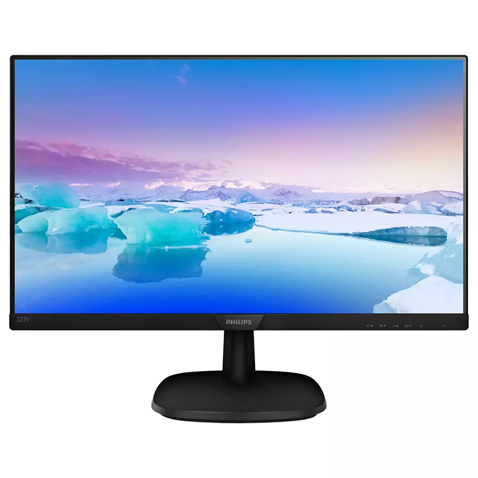

|  | A liquid-crystal display (LCD) is a flat-panel display or other electronically modulated optical device that uses the light-modulating properties of liquid crystals combined with polarizers. Liquid crystals do not emit light directly, instead using a backlight or reflector to produce images in color or monochrome.[2] LCDs are available to display arbitrary images (as in a general-purpose computer display) or fixed images with low information content, which can be displayed or hidden. For instance: preset words, digits, and seven-segment displays, as in a digital clock, are all good examples of devices with these displays. They use the same basic technology, except that arbitrary images are made from a matrix of small pixels, while other displays have larger elements. |
LCDs can either be normally on (positive) or off (negative), depending on the polarizer arrangement. For example, a character positive LCD with a backlight will have black lettering on a background that is the color of the backlight, and a character negative LCD will have a black background with the letters being of the same color as the backlight. Optical filters are added to white on blue LCDs to give them their characteristic appearance. |
|